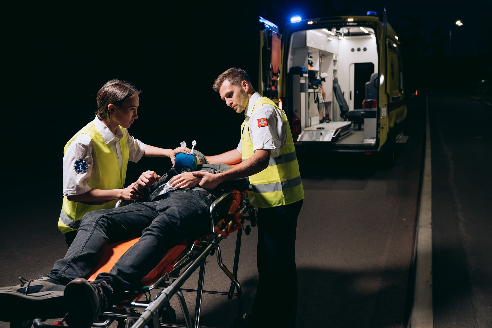
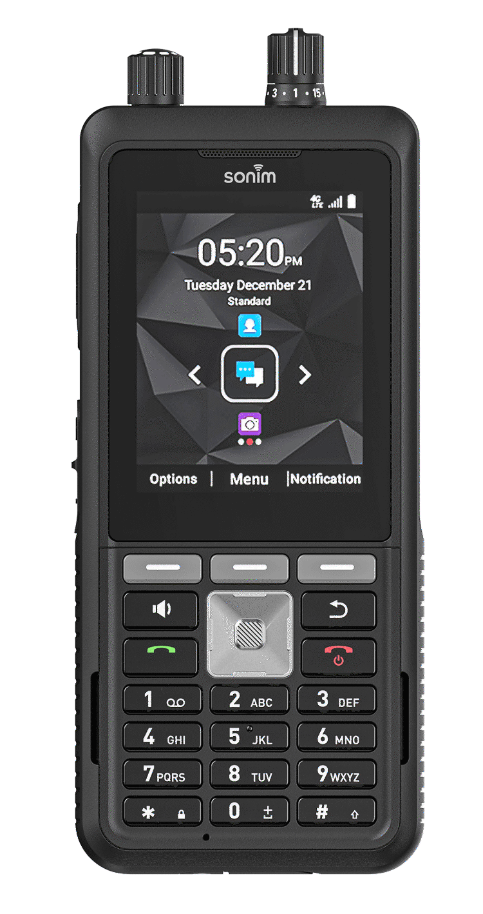
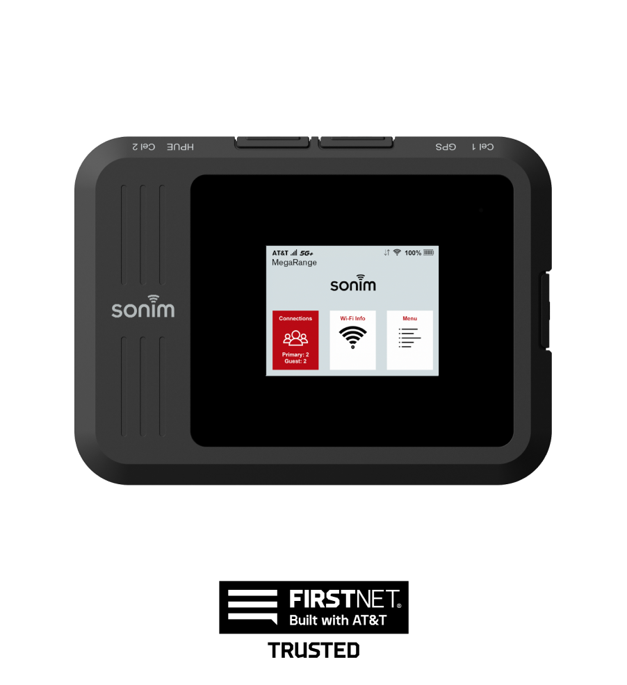
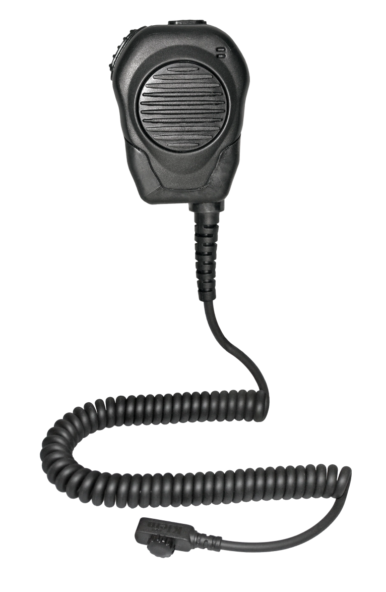
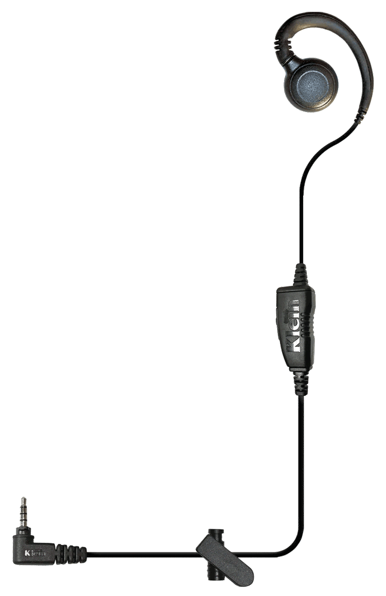
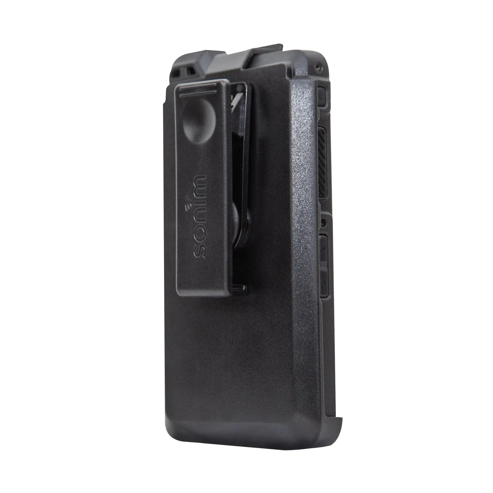

How EMS agencies are replacing legacy communications with mission-critical mobility.
The EMS communication challenge
Response times matter. A study of 1.7 million EMS runs found a median response of about 7 minutes, and about 13 minutes in rural areas, where nearly one call in ten waited close to half an hour.1
Crews work across hospitals, highways, rural roads, events and disasters, often in one shift. More than 18,200 local EMS agencies answer about 28.5 million 911 dispatches a year.2 Every call is a chain of conversations, and when communication fails, care is delayed.
Legacy land mobile radio (LMR) has limits. Coverage ends where the towers end, and every expansion means more sites and more capital. Meanwhile, the job now runs on more than voice:
Voice
Data
Video
GPS location
Patient information
Today’s EMS teams need:
Instant PTT communication
Reliable coverage beyond radio range
Rugged devices built for frontline use
Dispatch integration
Secure connectivity and management
1 Mell HK et al., JAMA Surgery, 2017. 2 NASEMSO, 2020 National EMS Assessment. Photos: Pexels (free license), Sonim.
Connected care in motion/ 02
The shift
Why leading EMS agencies are moving beyond traditional radios.
EMS leaders are moving away from treating communications as a radio problem and toward an operational mobility platform: nationwide broadband, standards-based push-to-talk and rugged devices that carry voice and data together.
FirstNet, the public safety network built with AT&T, covers more than 3 million square miles, gives first responders priority and preemption, and serves about 31,000 agencies. More than 190 deployable assets back it up for incidents and planned events.3
Mission-critical push-to-talk (MCPTT) brings radio-grade group calling to broadband, and gateways such as FirstNet Fusion Link connect MCPTT talkgroups to existing LMR systems. Agencies can move at their own pace without retiring the radios they already own.3
Traditional LMR
Modern mission-critical mobility
Coverage limits
→
Nationwide coverage
Voice only
→
Voice + data + video
Costly infrastructure
→
Carrier-powered
Separate devices
→
Consolidated platform
Limited flexibility
→
Rapid deployment
18,200+
Local EMS agencies answering 911 calls2
28.5M
911 dispatches a year in 41 reporting states2
~31,000
Public safety agencies on FirstNet3
EMS use cases
Ambulance operations
Crew-to-dispatch communications from the rig or on foot.
Interfacility transport
Real-time coordination between sending and receiving locations.
Special events
Large crowds and mass casualty readiness.
Disaster response
Deployable communications in disrupted environments.
7,254 ground ambulances · 404 rotor-wing and 114 fixed-wing aircraft · ~5.5M patient encounters a year4
Challenge
Remote aircraft tracking, weak coverage and environmental extremes at air bases and landing zones.
Solution
Sonim MegaConnect HPUE with FirstNet connectivity: Power Class 1 on Band 14, up to 6x the signal strength and 2x the upload speed of a standard hotspot, with external antenna ports.5
Results
Faster deployment
Stronger connectivity
Improved performance in remote locations
Reliable operation in demanding environments
GMR has also deployed 1,200 FirstNet-capable Sonim XP8 smartphones to support crisis and disaster response.3

Case study
Star EMS
Oakland County, Michigan · 911 and non-emergency transport · in-house 24/7 dispatch center4
Challenge
A costly LMR system with limited scalability. Growing the fleet meant more radio infrastructure.
Solution
Sonim XP5plus, Kodiak Dispatch and a FirstNet communications platform. Dispatchers make PTT calls, monitor talkgroups and see crew locations from a web console.
Benefits
Rugged frontline communications
Improved dispatch coordination
Centralized visibility
Scalable communications platform
“With FirstNet, we maintain contact with first responders nationwide during everyday crises and large disasters.”
Jeffrey E. Marani National Director of Field Technologies, Global Medical Response3
3 FirstNet.com, “Global Medical Response Connects Disaster Teams & Paramedics.” 4 globalmedicalresponse.com; starems.com. 5 sonimtech.com, MegaConnect. Photos: Pexels (free license).
Connected care in motion/ 04
The Sonim EMS solution stack
The EMS communications ecosystem.
More than a handset: device, connectivity, accessories and management, working as one system on AT&T and FirstNet.
01

XP5plus 5G
Fourth-generation radio-style handset for PTT-first crews. AT&T Enhanced PTT, FirstNet Rapid Response and FirstNet MCPTT.5
Dedicated PTTSide-mounted key
SOS buttonTop-mounted key
Glove-friendlyLarge, tactile keys
Removable batteryUp to 25 hr talk
FirstNet ReadyBand 14 certified
Ultra-ruggedIP68 · MIL-STD-810H
02

MegaConnect
The first ultra-portable 5G HPUE hotspot, with 2.5 Gbps Ethernet and four external antenna ports.5
Stronger connectivityUp to 6x signal
FirstNet MegaRangeHPUE Power Class 1
Mobile deploymentBattery-powered
Vehicle operationsExternal antennas
Incident commandUp to 64 devices
03



Accessories partners
Speaker mics, headsets, chargers, vehicle mounts and carry solutions.
EMS organizations are treating communications as an operational mobility platform. Devices like the Sonim XP5plus, connectivity such as MegaConnect, and integrated dispatch and management tools improve situational awareness, coverage, coordination and resilience while reducing dependence on traditional radio infrastructure. Talk to Sonim · sonimtech.com